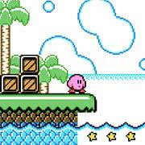
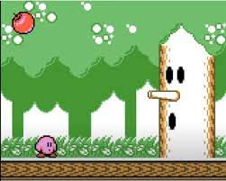

Kirby's Dream Land is a wonderful game that everyone should play because of the simplicity and art/music design that will make anyone play it.
The game itself is even better because of the replayablity that will make it a new experience every tine you play the game. You can make the game easier or more challenging if you want too, with even more things that you are able to customize like the amount of health you have.
The game is short with only 5 stages and with and average play time of an hour and a half. But there are some many things you might not have played; playing it a second time will make it more enjoyable.
Kirby's Dream Land is my favorite game on the GameBoy because of how different it is from the other games, even in its original black and white, it is still different from the hundreds of games on the system, so if you are looking for a fun game to play, this one should be your pick.